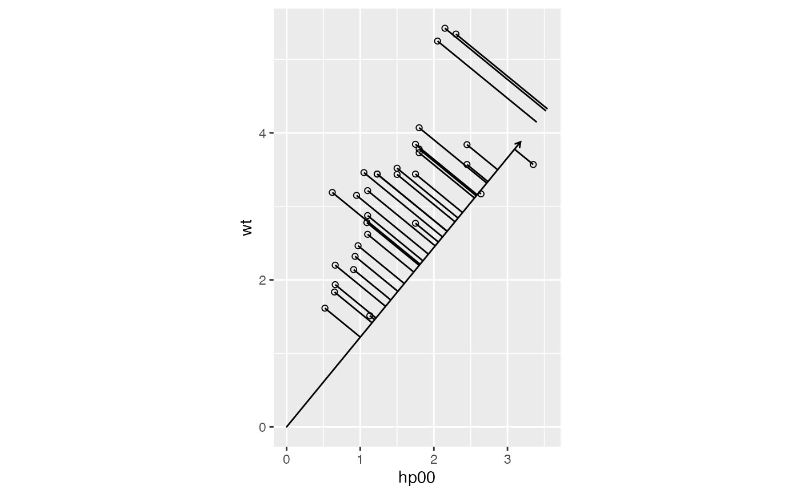
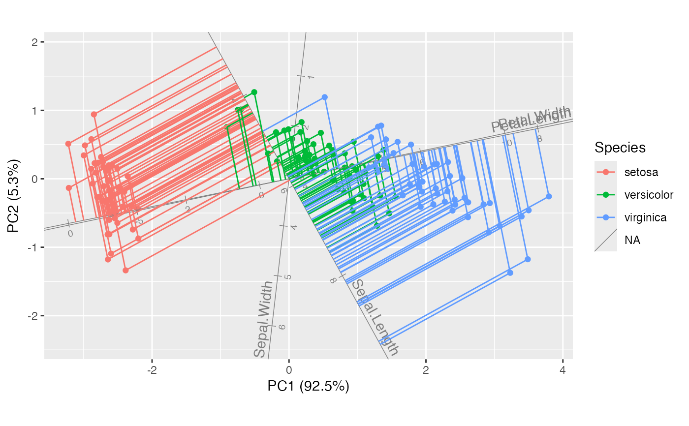
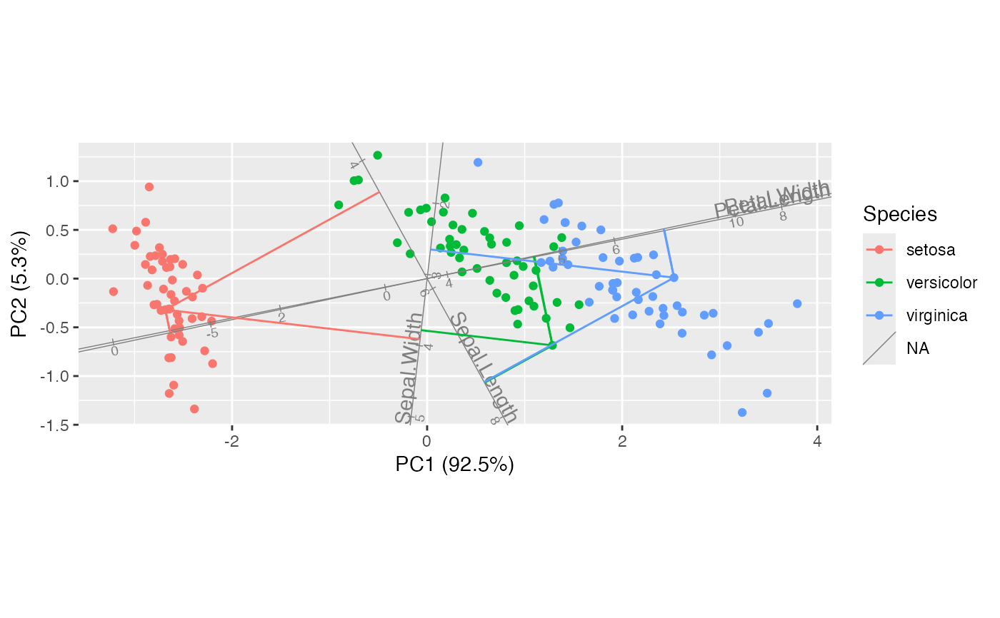
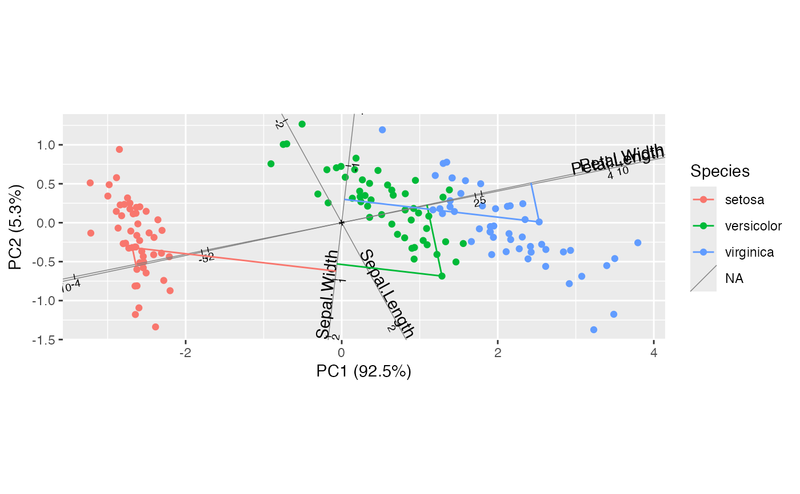
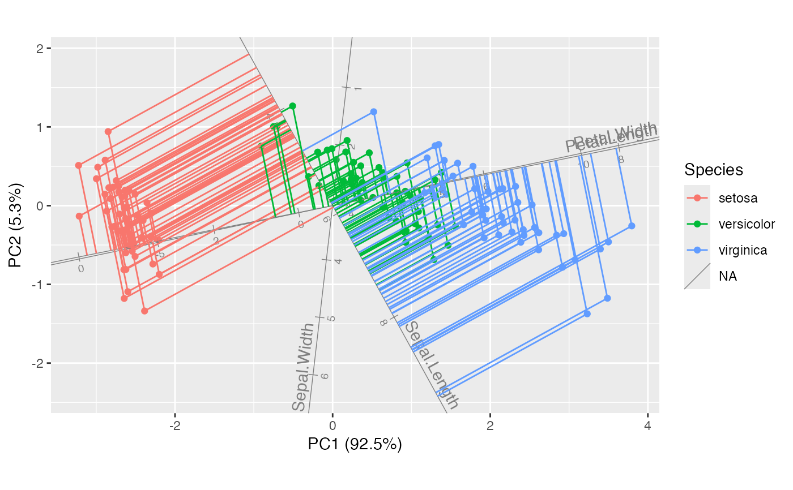
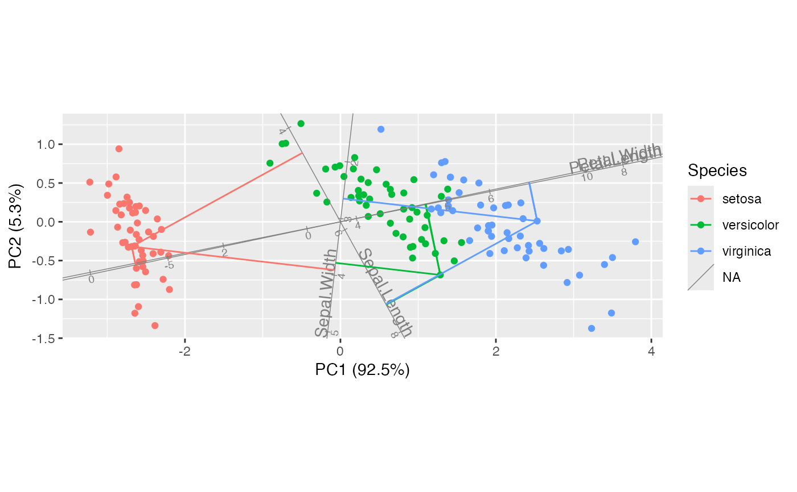
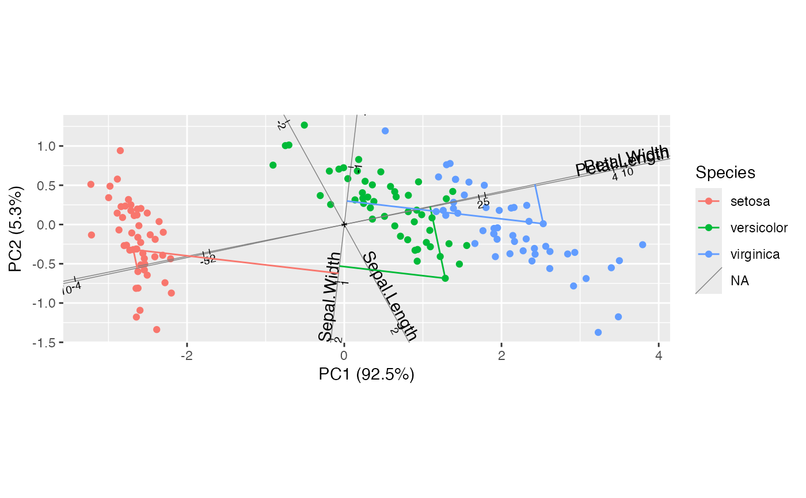
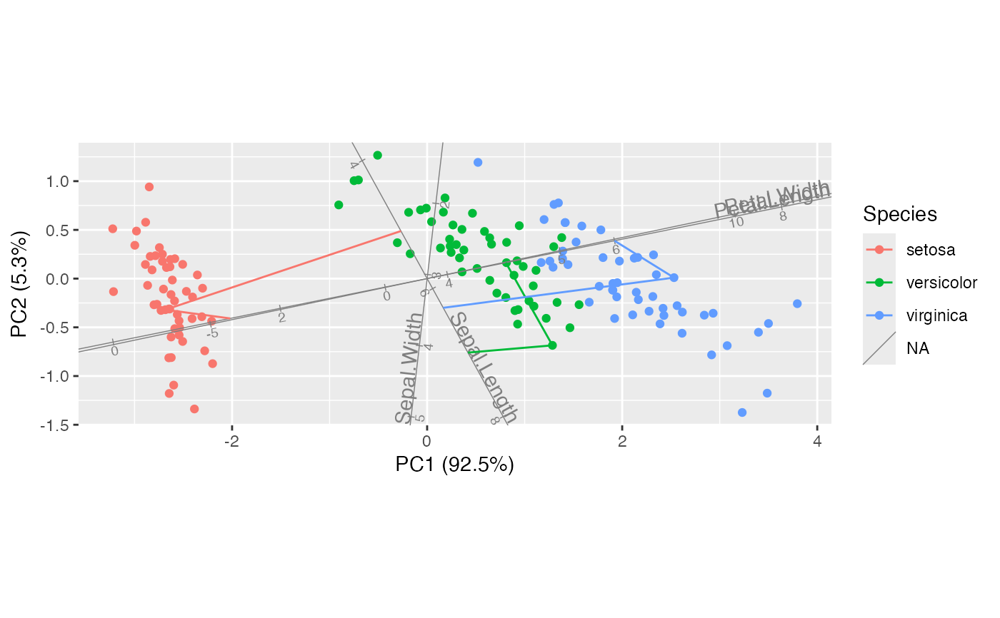
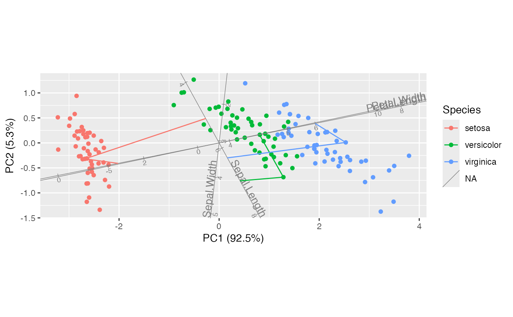

Compute projections of vectors from one matrix factor onto those of the other.
stat_projection(
mapping = NULL,
data = NULL,
geom = "segment",
position = "identity",
subset = NULL,
referent = NULL,
...,
show.legend = NA,
inherit.aes = TRUE
)Arguments
- mapping
Set of aesthetic mappings created by
aes(). If specified andinherit.aes = TRUE(the default), it is combined with the default mapping at the top level of the plot. You must supplymappingif there is no plot mapping.- data
The data to be displayed in this layer. There are three options:
If
NULL, the default, the data is inherited from the plot data as specified in the call toggplot().A
data.frame, or other object, will override the plot data. All objects will be fortified to produce a data frame. Seefortify()for which variables will be created.A
functionwill be called with a single argument, the plot data. The return value must be adata.frame, and will be used as the layer data. Afunctioncan be created from aformula(e.g.~ head(.x, 10)).- geom
The geometric object to use to display the data for this layer. When using a
stat_*()function to construct a layer, thegeomargument can be used to override the default coupling between stats and geoms. Thegeomargument accepts the following:A
Geomggproto subclass, for exampleGeomPoint.A string naming the geom. To give the geom as a string, strip the function name of the
geom_prefix. For example, to usegeom_point(), give the geom as"point".For more information and other ways to specify the geom, see the layer geom documentation.
- position
A position adjustment to use on the data for this layer. This can be used in various ways, including to prevent overplotting and improving the display. The
positionargument accepts the following:The result of calling a position function, such as
position_jitter(). This method allows for passing extra arguments to the position.A string naming the position adjustment. To give the position as a string, strip the function name of the
position_prefix. For example, to useposition_jitter(), give the position as"jitter".For more information and other ways to specify the position, see the layer position documentation.
- subset
An integer, logical, or character vector indicating a subset of rows or columns for which to render graphical elements. NB: Internally, the
subsetwill be taken from the rows of the fortified 'tbl_ord' comprising rows from only one of the matrix factors. It is still possible to pass a formula to thedataparameter, but it will act on the fortified data before it has been restricted to one matrix factor.- referent
The reference data set; see Details.
- ...
Additional arguments passed to
ggplot2::layer().- show.legend
logical. Should this layer be included in the legends?
NA, the default, includes if any aesthetics are mapped.FALSEnever includes, andTRUEalways includes. It can also be a named logical vector to finely select the aesthetics to display.- inherit.aes
If
FALSE, overrides the default aesthetics, rather than combining with them. This is most useful for helper functions that define both data and aesthetics and shouldn't inherit behaviour from the default plot specification, e.g.borders().
Value
A ggproto layer.
Details
An ordination model of continuous data can be used to predict values along
one dimension from those along the other, using the artificial axes as
intermediaries. The predictions correspond geometrically to projections of
elements of one matrix factor in principal coordinates onto those of the
other factor in standard coordinates. In the most familiar setting of PCA
biplots, variable (column) values are predicted from case (row) locations
along PC1 and PC2. This transformation obtains the axis projections as
xend,yend and pairs them with original points x,y to demarcate segments
visualizing the projections.
Referential stats
This statistical transformation is done with respect to reference data passed
to referent (ignored if NULL, the default, possibly resulting in empty
output). See stat_referent() for more details. This relies on a sleight of
hand through a new undocumented LayerRef class and associated
ggplot2::ggplot_add() method. As a result, only layers constructed using
this stat_*() shortcut will pass the necessary positional aesthetics to the
$setup_params() step, making them available to pre-process referent data.
The biplot shortcuts automatically substitute the complementary matrix factor
for referent = NULL and will use an integer vector to select a subset from
this factor. These uses do not require the mapping passage.
Biplot layers
ggbiplot() uses ggplot2::fortify() internally to produce a single data
frame with a .matrix column distinguishing the subjects ("rows") and
variables ("cols"). The stat layers stat_rows() and stat_cols() simply
filter the data frame to one of these two.
The geom layers geom_rows_*() and geom_cols_*() call the corresponding
stat in order to render plot elements for the corresponding factor matrix.
geom_dims_*() selects a default matrix based on common practice, e.g.
points for rows and arrows for columns.
Ordination aesthetics
This statistical transformation is compatible with the convenience function
ord_aes().
Some transformations (e.g. stat_center()) commute with projection to the
lower (1 or 2)-dimensional biplot space. If they detect aesthetics of the
form ..coord[0-9]+, then ..coord1 and ..coord2 are converted to x and
y while any remaining are ignored.
Other transformations (e.g. stat_spantree()) yield different results in a
lower-dimensional biplot when they are computed before versus after
projection. If the stat layer detects these aesthetics, then the
transformation is performed before projection, and the results in the first
two dimensions are returned as x and y.
A small number of transformations (stat_rule()) are incompatible with
ordination aesthetics but will accept ord_aes() without warning.
Computed variables
These are calculated during the statistical transformation and can be accessed with delayed evaluation.
xend,yendprojections onto (specified) vectors
See also
Other stat layers:
stat_center(),
stat_chull(),
stat_cone(),
stat_rule(),
stat_scale(),
stat_spantree()
Examples
# simplify the Motor Trends data to two predictors legible at aspect ratio 1
mtcars |>
transform(hp00 = hp/100) |>
subset(select = c(mpg, hp00, wt)) ->
subcars
# compute the gradient of `mpg` against these two predictors
lm(mpg ~ hp00 + wt, subcars) |>
coefficients() |>
as.list() |> as.data.frame() ->
grad
# project the data onto the gradient axis (with a reversed gradient vector)
ggplot(subcars, aes(x = hp00, y = wt)) +
coord_equal() +
geom_point(shape = "circle open") +
geom_vector(data = -grad) +
stat_projection(referent = grad)

# basic PCA
iris_pca <- ordinate(iris, cols = 1:4, model = prcomp)
# basic biplot
iris_biplot <-
ggbiplot(iris_pca, aes(color = Species, label = name)) +
geom_rows_point() +
geom_cols_axis()
# project all cases onto all axes
iris_biplot + stat_rows_projection()
 # project all cases onto select axes
iris_biplot + stat_rows_projection(referent = c(2, 4))

# project select cases onto all axes
iris_biplot + stat_rows_projection(subset = c(1, 51, 101))

# project select cases onto select axes
iris_biplot + stat_rows_projection(subset = c(1, 51, 101), referent = c(2, 4))

# project select cases onto manually provided axes
iris_cols <- as.data.frame(get_cols(iris_pca))
iris_biplot + stat_rows_projection(subset = c(1, 51, 101), referent = iris_cols)
# project all cases onto select axes
iris_biplot + stat_rows_projection(referent = c(2, 4))

# project select cases onto all axes
iris_biplot + stat_rows_projection(subset = c(1, 51, 101))

# project select cases onto select axes
iris_biplot + stat_rows_projection(subset = c(1, 51, 101), referent = c(2, 4))

# project select cases onto manually provided axes
iris_cols <- as.data.frame(get_cols(iris_pca))
iris_biplot + stat_rows_projection(subset = c(1, 51, 101), referent = iris_cols)
 # project selected cases onto selected axes in full-dimensional space
ggbiplot(iris_pca, ord_aes(iris_pca, color = Species, label = name)) +
geom_rows_point() +
geom_cols_axis() +
stat_rows_projection(subset = c(1, 51, 101), referent = c(2, 4))

# project selected cases onto selected axes in full-dimensional space
ggbiplot(iris_pca, ord_aes(iris_pca, color = Species, label = name)) +
geom_rows_point() +
geom_cols_axis() +
stat_rows_projection(subset = c(1, 51, 101), referent = c(2, 4))
